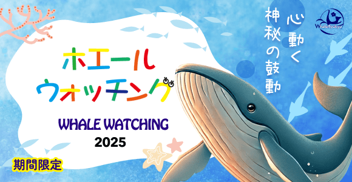
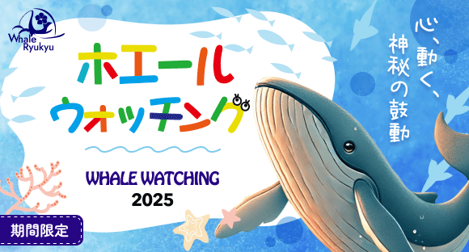
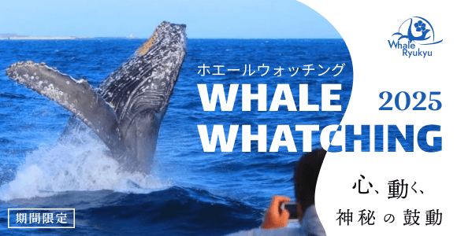
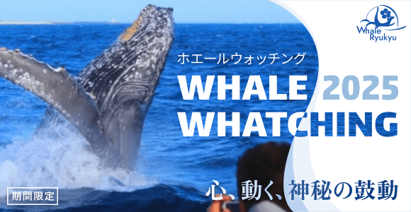

サイズ： 580*300
テイスト： A.イラスト使用（ポップ～親しみやすさ） / B.写真使用（スタイリッシュ～優雅さ）※テイスト別
子供達が目を引くようなポップで可愛らしいデザインにしました。
バックカラーに海のようなあしらいをつけることで、シンプルすぎるデザインにならないようにしました。
全体的なイラストのテイストを揃えることでまとまりのあるデザインになるようにしました。
鯨の絵は素材を探しても見つからなかったため、チャットgptで生成しました。
迫力があり、ウォッチングの様子がわかるように人物が写っている素材を選出しました。
人物は実際右寄りにいましたが、ウェーブのマスクをかけた時に見切れすぎないようにPhotoshopにて左に寄せる編集を行いました。
英語をマスクをかけることで、白と海の写真のバイカラーのようなデザインにし、シンプルだけどかっこいいデザインにしました。
初稿（イラスト)

完成（イラスト)

初稿（写真)

完成（写真)
